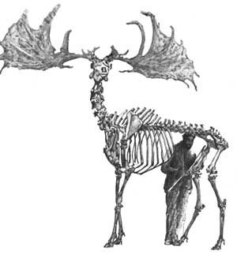
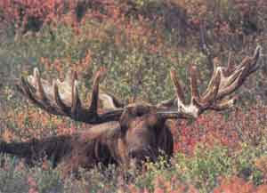
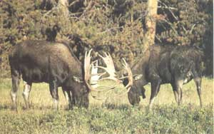
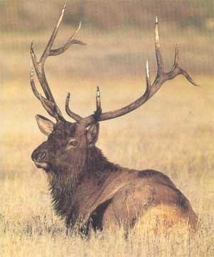
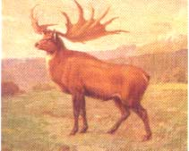
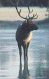
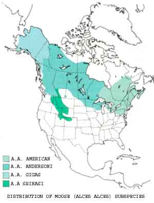

Are giant antlers evidence of evolution gone awry?
PEAT BOGS HAVE PROVEN TO BE among nature's most efficient vaults for the long-term preservation of organic matter. The peat marsh environment's near-neutral pH, high concentrations of bone-decalcifying minerals and subaquatic exclusion of oxygen combine to form a superb mummifying and fossilizing medium.
From peat bogs in northern Europe have come the Grauballe and Tollund mummies and other millennia-old human bodies so remarkably preserved that flesh and muscle, hair, even facial expressions appear almost lifelike. But perhaps the most intriguing remains to emerge from the bogs are those of a long-extinct Eurasian deer, Megaloceros giganteus, the Irish elk.
A mature Irish elk stag stood to more than seven feet at the shoulders, could weigh in excess of 1,500 pounds and carried antlers weighing up to 95 pounds and spanning as much as 168 inches from tip to tip. That's a spread of 14 feet. Think of it. The greatest spread on record for the North American elk is a comparatively humble 63 1/2 inches.
This outrageous headgear ranks as the most massive ever worn by any animal, extinct or living, almost doubling that of today's champion, the Alaska-Yukon moose. Early on, in fact, it was presumed from the palmate structure and great size of its antlers that the Irish elk was a moose.
The moose is still found across much of northern North America.
Why, then, was the creature dubbed an elk rather than a moose? Because "elk" (from the ancient Greek alee ) is what Europeans call the animal known here in North America as the moose. But no matter, for the extinct ruminant was no more a moose than it was an elk. What it was, some leading evolutionary biologists now believe, was an early relative of today's Eurasian fallow deer.
Further, the Irish elk was Irish only insofar as Irish peat bogs were the first to yield its remains; subsequently, many antlers and some entire skeletons have been exhumed from bog sites in England, Germany and many far-flung elsewheres. Because the Irish elk was designed for life in a temperate climate, it never wandered to the extremes of Siberia and on across the Bering land bridge to North America, as did the moose, caribou and red deer (the latter being the same species as our elk, or wapiti).
A male with large antlers is a genetically superior forager.
The Irish elk was at least a half-million years in evolving to the highly specialized form that flourished during the late Pleistocene epoch, a time of generalized giantism in mammals. In its final millennium, 11,000 to 12,000 years ago, it roamed in great herds across the Ice Age grasslands, living and lusting and reproducing its eccentric genes for a relatively short while before joining the silent ranks of the extinct. In its passing, the I great stag bequeathed the title of king of the antlered species to the significantly less well endowed moose.
Which is not to apologize for the moose. The most robust of the four North American subspecies, the Alaska-Yukon moose, is the largest-bodied member of the deer family living today, measuring some seven feet at the shoulders and more than nine feet in length; of a size, in fact, with the Irish elk. It is also the largest-antlered of any living deer. The record antler spread for moose listed in the Boone and Crockett Club's Records of North American Big Game is 81 1 / 2 inches, or nearly seven feet. That's only half the spread of the largest Irish elk, but no small thing nonetheless.
How can animals grow and shed and regrow such huge antlers year after year? And, an even more intriguing question, why? That is, what good could 50 pounds or so of skull bone be to a bull moose, or twice that to an Irish elk? Does the flamboyant headgear of these and other big-antlered members of the deer clan represent evolution gone awry?
To find out, let's explore both the how and why of antler growth.
In all deer species, antler development is timed so that full growth is attained just prior to the annual mating season, or rut.
Antlers grow from two permanent knobs of bone, called pedicles, that jut from the foreheads of all species of male deer. While pedicle development in moose begins soon after birth, antler growth doesn't commence until the following spring. A young bull's first antlers typically are short, single-beamed, unpalmate "spikes," having simple forks at the tips. The second cycle's growth is larger, with the main beams distinctly forked and the beginnings of palmation evident. Overall mass and palmation continue to increase for several years thereafter, with maximum antler size attained between the ages of seven and 10. Beyond this age, gradual atrophy sets in-nature's way of discouraging older, postprime bulls from mating.
When a pair of antlers is dropped after the rut, the pedicle tops are left raw and bloody. But scabs soon form, beneath which new tissue quickly forms and pushes upward. The cells responsible for antler growth are among the fastest multiplying of any mammalian tissue, requiring only about 150 days to equip a healthy, mature, well-fed bull moose with its heavy rack of antlers. (In one study, the antler weights of 140 trophy-class Alaska-Yukon bulls averaged just under 51 pounds.)
Antlers grow not from their bases, as do horns, but increase their length at the tips of the main beams and tines by way of cartilage deposition. Antler cartilage is produced by specialized cells, called osteoblasts, sandwiched between the antler and its blood-filled velvet covering. While new cartilage is forming at the tips, older cartilage farther down the shafts is being replaced by a soft, fibrous bone matrix that invades from the pedicles and works upward.
As growth continues, the matrix gradually hardens, or ossifies, via mineralization. Like so: Toward the end of the growth period, after bone matrix has completely replaced cartilage, calcium and phosphates are drawn from mineral-rich foods such as willow and, as necessary, withdrawn from reserves stored in the skeleton.
By late August the velvet's work is done. Soon it begins to dry, split and peel away from the antlers in long, bloody tatters. This shedding of the velvet apparently entails some itching or other discomfort, for the males of all deer species invariably speed the process by rubbing their antlers against brush and trees.
No sooner are a bull's antlers freed from their velvet sheaths than he enters the rut and commences "horning" everything that will stand for it-brush, saplings, trees, the ground. This action coats the raw, bloody antlers with plant enzymes that react with oxygen and chemicals in the blood to form a dark superficial stain. Excepted are the tips of the tines, which are nonporous (and, thus, nonabsorbent) and kept polished to an ivory-like sheen by abrasion. By early September, the antlers are finished and ready for action.
It might seem that the broad, flat antlers of a bull moose would make lousy weapons-unlike the multipointed headgear of deer and elk. In fact, the numerous long, sharp tines projecting from the main antler beams and palms of a prime bull moose can be deadly when bulldozed into a rival's vitals. Additionally, the massive palms (the Boone and Crockett record is 56 inches long by 30 inches wide) serve as shields to deflect the jabs of opponents. (Bull moose and the males of other deer species typically use their antlers as weapons only against one another; the primary weapons of defense against predators are flailing front hooves.)
If one bull or the other can, by his antler displays and aggressive vocalizations and body gestures, convince the other that he's king of the mountain, the intimidated party will stomp off and pretend to feed. The victor, meanwhile, will indulge in such celebratory activities as wallowing and horning, all the while keeping a covert eye out for surprise attack by the possibly sore loser. In this way, through show and bluff, many dominance contests are settled short of physical violence.
Real trouble typically starts with a shoving match, the goal being to put the opponent off balance and then gore him in the ribs or another vital area. Once in a great while (some 2% to 5% of serious battles), one bull kills another outright. And on rare occasions, two battling bulls will become antler-locked. If they can't work free, both may die from exhaustion, dehydration or starvation, or fall easy prey to predators.
After the rut, the importance of antlers diminishes sharply, though bull moose continue to spar in order to maintain the established rank order. Soon enough, though, answering to the season's declining hours of daylight and a resulting alteration in hormone levels, the bond between antlers and pedicles deteriorates and the heavy appendages drop off.
That's the how of antler development, but what of the more difficult question of why such odd and ornate organs evolved at all,
Antlers are spectacular examples of so-called secondary sexual characters-that is, they play an indirect but important role in the reproductive process, and their growth is controlled by sex hormones. In addition to being both symbolic and actual weapons used in establishing the breeding hierarchy among bulls, antlers serve a third important evolutionary purpose by giving females something by which to judge the genetic worth of their suitors. In general, the larger a male's antlers, the more instinctively desirable he will appear to females in estrus.
Neither bluff, battle nor beauty, however, would seem to explain the need for headgear the likes of that worn by moose, much less the even more awesome equipment of the extinct Irish elk. What, then, is nature's purpose for truly giant antlers?
The answer begins with an extinct Englishman named Thomas Malthus.
Malthus was a British social economist of the late eighteenth and early nineteenth centuries. In 1798, he published a book titled (in severely abbreviated form) An Essay on Population. Therein, Malthus offered a revolutionary theory on the nature of population growth as it relates to the fate of humanity. In brief, what Malthus said was this:
A population can reproduce itself geometrically (1+1=2, 2+2=4,4+4=8, etc.). Meanwhile, the means of producing food and other essentials can be increased only arithmetically (1+1=2, 2+1 = 3, 3+1=4, etc.). Therefore, unless humans take voluntary steps to hold their population to within what the Earth can comfortably support over the long haul, pressure on the environment will increase until nature is forced to step in and limit our population for us, via famine, disease and war.
Malthus was right, of course. But what has this to do with big antlers?
That's where a second extinct Englishman, Charles Darwin, enters the picture. In his autobiography, Darwin recalls how, in 1838, a casual reading of Malthus's An Essay on Population precipitated a breakthrough in his thinking about the origin and modification of species:
"I happened to read for amusement Malthus on Population, and being well prepared to appreciate the struggle for existence which everywhere goes on from long continued observation of the habits of animals and plants, it at once struck me that under these circumstances favorable variations would tend to be preserved and unfavorable ones to be destroyed. The result of this would be the formation of new species."
And there we have a sophomoric sketch of the workings of evolution via natural selection.
In his remarkable The Origin of Species, published in 1859, Darwin expanded on those early musings:
"Amongst many animals, sexual selection will have given its aid to ordinary selection, by assuring to the most vigorous and best adapted males the greatest number of offspring. ... But success will often depend on the males having special weapons, or means of defense, or charms; and a slight advantage will lead to victory."
In the deer family, as we have seen, those special male weapons and charms are antlers. In the exceptional cases of the Irish elk, the moose and a few other species, however, we are still left to wonder at the necessity for such weapons and charms.
In an article appearing in the March 1986 issue of Natural History, the University of Calgary's Valerius Geist, an internationally respected authority on horned and antlered wildlife, outlined a startling theory concerning the evolvement of outsized antlers:
"The solution to the mystery of [the Irish elk's] huge antlers lies, paradoxically, in the giant deer's adaptation to running. Running with great speed and endurance is a means of evading predators and requires a large amount of space. For this trait to promote survival, the young must be as fleet-footed as their mothers soon after birth. Offspring must be born as large and as highly developed as possible and fed a supply of milk abundant enough in nutrients and energy to foster rapid growth to 'survival size,' thus shortening the vulnerable time period after birth. . . .
"To produce milk rich in nutrients and energy, the mother needs to select highly nutritious and digestible forage, and above all, she must be able to divert these nutrients and energy from body growth and maintenance to milk production. In males, the same genetic ability to divert nutrients means that more material is available for antler growth.... A female choosing a male with relatively large antlers selects one with a hereditary endowment for superior foraging and for diverting nutrients and energy from body growth to antler production."
In summary, then, Dr. Geist is saying that the relative size of young at birth, the percentage of milk solids in females and antler size in males all show positive correlation with a deer species' distance-running ability. Thus, according to this innovative theory, giant antlers evolved as a strongly positive indication of a cursorial (running) deer's ability to utilize its environment efficiently.
We see many of these same traits in caribou-exceptionally large antlers in males, production of exceptionally rich milk in females (the richest of all deer species, in fact) and large birth size and rapid growth in the young-a contemporary species whose
primary defense against predators is open-country running.
Meanwhile, deer and elk evolved a different survival strategy suited to a different environment. Rather than making their homes on the open grasslands, as did the Irish elk, or out on the lean tundra, as do the caribou, deer and elk are primarily dwellers of young forests. Since the infants of both deer and elk attempt to avoid the jaws of predators not by fleeing, but by hiding while the mother stands ready to provide what defense or diversion she can, deer and elk can afford to be born smaller and mature more slowly. Consequently, their mothers can afford to be less efficient browsers producing only a moderately rich milk. Interestingly, these traits are reflected, in compliance with Geist's theory, in smaller antlers among males. (The elk's antlers are long, many-pointed and beautiful, but lack the great palmate mass of moose and caribou racks.)
The moose is something of an in-between species. Although primarily a dweller of Boreal forests in modern times, the big deer evolved as a runner. Still, since moose young hide as newboms, it's not surprising that the richness of moose milk is lower than that of caribou, falling in with that of deer and elk, the other "hiders."
Thus, applying the Geist theory, we could expect to see greater evolutionary pressure for the development of big antlers in the Irish elk and the caribou, those two quintessential open-country runners, than in the forest-dwelling species such as deer, elk and moose.
Why, then, aren't the caribou's antlers larger than those of the moose?
In relation to body size, they are larger-two to three times larger.
In accordance with a phenomenon called allometry, antler size increases not just in proportion to body size, but faster (1.35 in the exponent). Thus, the racks of large deer species aren't just absolutely larger than those of smaller species, but relatively larger as well.
A really big bull caribou might weigh 600 pounds on the hoof, while a trophy bull moose will double that and then some. Thus, the forest-dwelling moose's antlers are more massive than those of the tundra-running caribou, in apparent defiance of the Geist theory, only because the animal itself is so much bigger.
Until recently, many biologists considered the Irish elk's four-yard antlers to be an evolutionary mistake and the primary cause of the species' extinction. Surely, it was thought, such monstrous organs would rob the animal's body of important nutrients, make swimming more difficult, and get caught in brush and trees to hinder escape from predators.
As sensible as this sounds, scientists now say such was not the case. The headgear of the Irish elk, like that of the moose and other big-antlered deer species, evolved in positive response to specific needs. The real undoing of the Irish elk was not its big antlers, but entrenched specialization and a lack of adaptability. The rapidly changing climate at the close of the final great glaciation snatched away the open grasslands on which the giant grazers depended for their survival; unable to adapt quickly enough to the life and diet of either tundra or forest, one of nature's all-time grandest creations, like MacArthur's proverbial old soldier, just faded away.
|
 BY KAY HOLMES STAFFORD Megaloceros giganteus, the regal, extinct Irish elk, sported the most impressive headgear of any known deer. |
 © ALAN CAREY The moose is still found across much of northern North America. |
 © ALAN CAREY Rutting battles are highly ritualized affairs. |
|
 © ROGER AND DONNA AITKENHEAD/ANIMALS ANIMALS Artist's rendering of the Irish elk. Did that massive rack serve a purely practical purpose? |
 C.R KNIGHT COURTESY DEPARTMENT OF LIBRARY SERVICES/AMERICAN MUSEUM OF NATURAL HISTORY The wapiti, our modern elk, sports dramatic antlers, though less massive than those of the moose. |
 © LEN RUE JR./ANIMALS ANIMALS |
|
 |
|
|